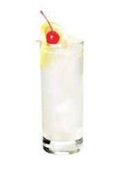

O Collins é um cocktail refrescante de verão que combina gin, sumo de limão e água com gás num copo alto.
Método de Preparo
GuarniçãoDecore com uma fatia de limão e cereja maraschino. |
 |
Parece que o Collins evoluiu do Gin Punch, uma bebida popular da época, e a sua criação e nome são atribuídos a John (ou possivelmente Jim) Collins, chefe de mesa no Limmer's Hotel na Conduit Street em Londres durante o final do século XIX.